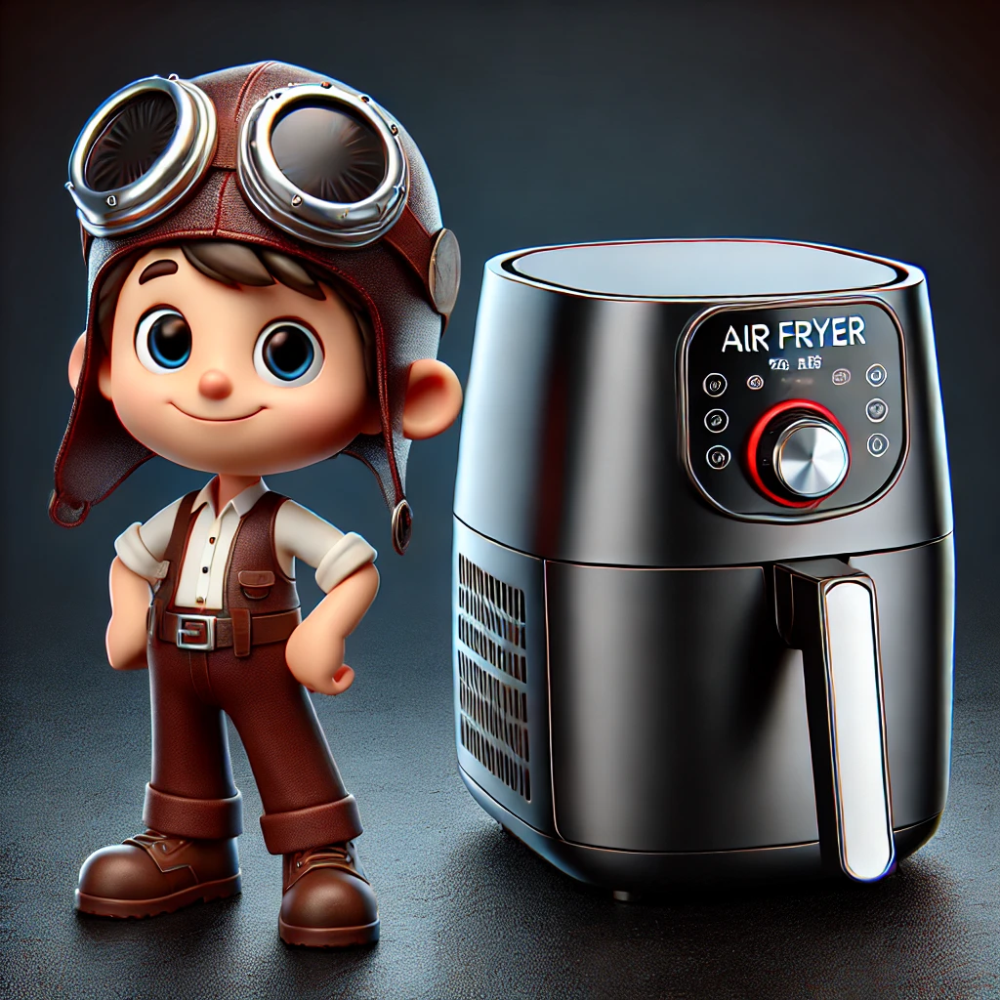

Best Air Fryer for Beginners
Air fryers are a fantastic addition to any kitchen, especially for those who are new to cooking or looking to make healthier meals with less oil. If you're just starting out with air frying, it's important to find a user-friendly model that makes the learning curve easy and enjoyable. Here are some of the best air fryers for beginners that combine simplicity, versatility, and great results.
1. COSORI Air Fryer Max XL 5.8-Quart
Key Features:
- 11 Preset Functions: Easily cook a variety of dishes with one touch.
- 5.8-Quart Capacity: Perfect for families or meal prepping.
- User-Friendly Interface: Digital touch screen with intuitive controls.
Why It's Great for Beginners:
The COSORI Air Fryer Max XL is highly recommended for beginners due to its simple, user-friendly interface and preset functions. It takes the guesswork out of cooking and ensures consistent results every time.
2. Ninja Air Fryer AF101 4-Quart
Key Features:
- 4-Quart Capacity: Suitable for small families or individuals.
- One-Touch Control Panel: Easy to use with adjustable time and temperature.
- Dehydrate Function: Adds versatility for making snacks.
Why It's Great for Beginners:
The Ninja Air Fryer AF101 offers straightforward controls and a compact design, making it perfect for those new to air frying. Its dehydrate function also provides extra value for beginners looking to experiment with different recipes.
3. Instant Vortex 4-in-1 Air Fryer 6-Quart
Key Features:
- 4-in-1 Functionality: Air fry, bake, roast, and reheat.
- 6-Quart Capacity: Great for families and batch cooking.
- Simple Controls: Easy-to-use touch screen with customizable programs.
Why It's Great for Beginners:
The Instant Vortex 4-in-1 Air Fryer combines multiple functions in a simple, easy-to-navigate interface. Its larger capacity makes it ideal for beginners who want to cook larger meals or meal prep for the week.
4. Philips Essential Airfryer Compact 2.65-Quart
Key Features:
- Compact Size: Perfect for small kitchens or single servings.
- Rapid Air Technology: Ensures even cooking with minimal oil.
- Digital Display: Easy-to-read controls with preset options.
Why It's Great for Beginners:
The Philips Essential Airfryer Compact is an excellent choice for those with limited space or cooking for one. Its compact design and straightforward controls make it easy to start air frying right away.
5. Dash Tasti-Crisp Air Fryer 2.6-Quart
Key Features:
- Auto Shut-Off: Prevents overcooking.
- AirCrisp Technology: Reduces added fat by 70-80% without sacrificing flavor.
- Compact Design: Fits easily in any kitchen.
Why It's Great for Beginners:
The Dash Tasti-Crisp Air Fryer is budget-friendly and simple to use, making it perfect for beginners. Its compact size and auto shut-off feature add convenience and safety for new users.
Conclusion
Choosing the right air fryer can make a big difference for beginners. The models listed above offer ease of use, intuitive controls, and excellent results, making them ideal for those new to air frying. Whether you're cooking for yourself or your family, these air fryers will help you create delicious and healthy meals with minimal effort.